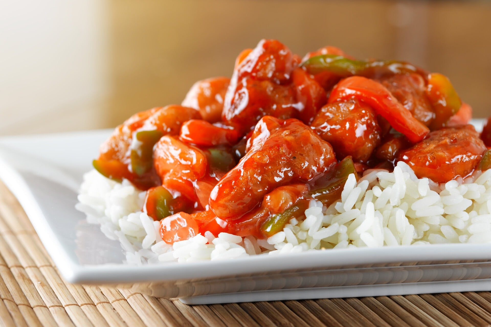

Chinese Chilli Chicken
- 
-
A fantastic (and fairly hot) sticky, yummy chicken dish.
Can't handle the heat, go easy on the chillies.
Course: Dinner
Prep time: 50 minutes
Cook time: 35 minutes
Total time: 85 minutes
Ingredients
- 1.1 Ibs Chicken Breasts
- 0.75 Cup Plain Flour
- 0.5 tsp Ground Pepper Powder
- 2 Large egg(s)
- 1 Cup Sunflower or Rapeseed Oil
- 1 Cup Chicken Stock
- 1 Tbsp Lemon Juice
- 2 Tbsp Soya Sauce
- 0.5 Tbsp Honey - Or Sugar
- 1 Tbsp Sweet Chill Sauce
- 2 Tbsp Cornflour
- 1 Tbsp Butter
- 1 tsp Ginger
- 2 Cloves Garlic - Crushed
- 1 Red Pepper - Cut into Strips
- 3 Red Chillis - Chopped
- 2 Spring Onion(s) - Chopped
- Rice to Serve
Method
- Pat chicken breasts dry with paper towels and cut into strips.
- Mix the plain flour with the ground black pepper and some salt to taste.
- Coat the chicken with approximately 1/4 of the flour mix, place the rest on a plate to one side. Keep the chicken in the fridge for 20-30 minutes (This helps improve the batter).
- Mix the eggs together and place in a suitable container for dipping the chicken.
- Heat the oil on medium/high in a pan or wok.
- Working in small batches, dip the previously floured chicken pieces into the egg and then coat in the flour on the plate.
- Once golden brown, place on paper towels to drain excess oil.
- Once all fried, keep warm in the oven.
- Mix together chicken stock, lemon juice, soya, honey, sweet chilli sauce, and cornflour until smooth.Keep to one side.
- Heat the butter in a pot. When it begins to bubble, add the ginger, garlic, pepper, and chillies and fry until cooked through (about 4 minutes).
- Add the stock mix and stir until the sauce thickens.
- Once thickened, add the chopped spring onions and stir for a further minute.
- Add the chicken pieces to the sauce and ensure that all pieces are well coated and piping hot.
- Serve with white rice. Enjoy!